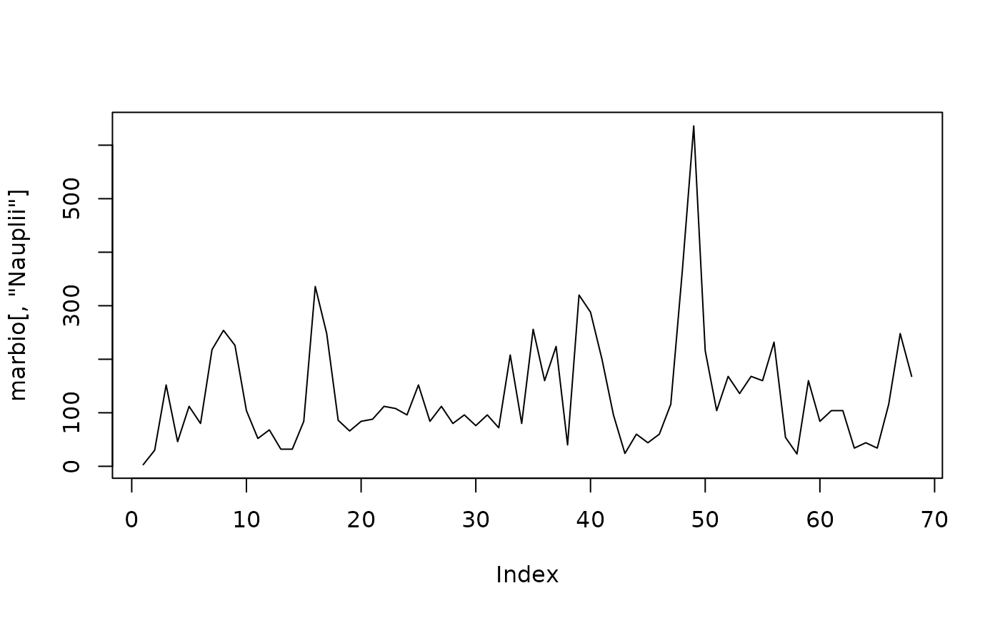
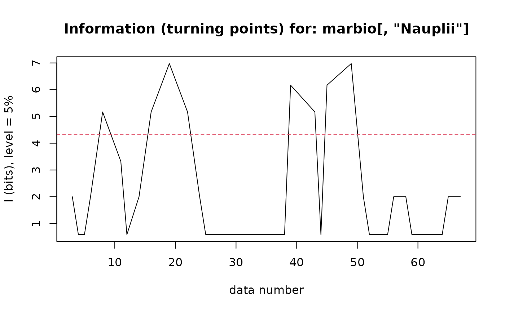
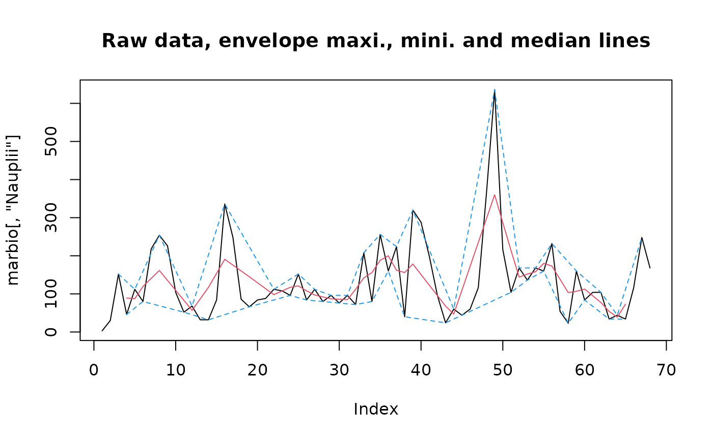

Analyze turning points (peaks or pits)
turnpoints.RdDetermine the number and the position of extrema (turning points, either peaks or pits) in a regular time series. Calculate the quantity of information associated to the observations in this series, according to Kendall's information theory
turnpoints(x, calc.proba = TRUE)
# S3 method for class 'turnpoints'
print(x, ...)
# S3 method for class 'turnpoints'
summary(object, ...)
# S3 method for class 'summary.turnpoints'
print(x, ...)
# S3 method for class 'turnpoints'
plot(x, level = 0.05, lhorz = TRUE, lcol = 2, llty = 2,
type = "l", xlab = "data number", ylab = paste("I (bits), level = ",
level * 100, "%", sep = ""), main = paste("Information (turning points) for:",
x$data), ...)
# S3 method for class 'turnpoints'
lines(x, max = TRUE, min = TRUE, median = TRUE,
col = c(4, 4, 2), lty = c(2, 2, 1), ...)
# S3 method for class 'turnpoints'
extract(e, n, no.tp = 0, peak = 1, pit = -1, ...)Arguments
- x
a vector or a time series for
turnpoints(), a 'turnpoints' object for the methods- calc.proba
are the probabilities associated with each turning point also calculated? The default,
TRUE, should be correct unless you really do not need these. In this case, theplot()method is not usable- object
a 'turnpoints' object, as returned by the function
turnpoints()- e
a 'turnpoints' object, as returned by the function
turnpoints()- level
the significant level to draw on the graph if
lhorz=TRUE. By default,level=0.05, which corresponds to a 5% p-value for the test- lhorz
if
lhorz=TRUE(by default), an horizontal line indicating significant level is drawn on the graph- lcol
the color to use to draw the significant level line, by default, color 2 is used
- llty
the style to use for the significant level line. By default, style 2 is used (dashed line)
- type
the type of plot, as usual meaning for this graph parameter
- xlab
the label of the x-axis
- ylab
the label of the y-axis
- main
the main title of the graph
- max
do we plot the maximum envelope line (by default, yes)
- min
do we plot the minimum envelope line (by default, yes)
- median
do we plot the median line inside the envelope (by default, yes)
- col
a vector of three values for the color of the max, min, median lines, respectively. By default
col=c(4,4,2)- lty
a vector of three values for the style of the max, min, median lines, respectively. By default
lty=c(2,2,1), that is: dashed, dashed and plain lines- n
the number of points to extract. By default
n=length(turnp), all points are extracted- no.tp
extract gives a vector representing the position of extrema in the original series.
no.tprepresents the code to use for points that are not an extremum, by default '0'- peak
the code to use to flag a peak, by default '1'
- pit
the code to use to flag a pit, by default '-1'
- ...
Additional parameters
Details
This function tests if the time series is purely random or not. Kendall (1976) proposed a series of tests for this. Moreover, graphical methods using the position of the turning points to draw automatically envelopes around the data are implemented, and also the drawing of median points between these envelopes.
With a purely random time series, one expect to find, on average, a turning point (peak or pit that is, an observation that is preceded and followed by, respectively, lower or higher observations) every 1.5 observation. Given it is impossible to determine if first and last observation are turning point, it gives:
$$E(p) = 2/3*(n-2)$$
with p, the number of observed turning points and n the number of observations. The variance of p is:
$$var(p) = (16*n - 29)/90$$
Ibanez (1982) demonstrated that P(t), the probability to observe a turning point at time t is:
$$P(t) = 2*(1/n(t-1)! * (n-1)!)$$
where P is the probability to observe a turning point at time t under the null hypothesis that the time series is purely random, and thus, the distribution of turning points follows a normal distribution.
The quantity of information I associated with this probability is:
$$I = -log2 P(t)$$
It can be interpreted as follows. If I is larger, there are less turning points than expected in a purely random series. There are, thus, longer sequence of increasing or decreasing values along the time scale. This is considered to be more informative.
As you can easily imagine, from this point on, it is straightforward to construct a test to determine if the series is random (regarding the distribution of the turning points), more or less monotonic (more or less turning points than expected).
Value
An object of type 'turnpoints' is returned. It has methods print(), summary(), plot(), lines() and extract().
Regarding your specific question, 'info' is the quantity of information I associated with the turning points:
- data
The dataset to which the calculation is done
- n
The number of observations
- points
The value of the points in the series, after elimination of ex-aequos
- pos
The position of the points on the time scale in the series (including ex-aequos)
- exaequos
Location of ex aequos (1), or not (0)
- nturns
Total number of turning points in the whole time series
- firstispeak
Is the first turning point a peak (
TRUE), or not (FALSE)- peaks
Logical vector. Location of the peaks in the time series without ex-aequos
- pits
Logical vector. Location of the pits in the time series without ex-aequos
- tppos
Position of the turning points in the initial series (with ex-aequos)
- proba
Probability to find a turning point at this location (see details)
- info
Quantity of information associated with this point (see details)
References
Ibanez, F., 1982. Sur une nouvelle application de la theorie de l'information a la description des series chronologiques planctoniques. J. Exp. Mar. Biol. Ecol., 4:619-632
Kendall, M.G., 1976. Time-series, 2nd ed. Charles Griffin & Co, London.
WARNING
the lines() method should be used to draw lines on the graph of the original dataset (plot(data, type="l") for instance), not on the graph of turning points (plot(turnp))!
See also
Examples
data(marbio)
plot(marbio[, "Nauplii"], type = "l")

# Calculate turning points for this series
Nauplii.tp <- turnpoints(marbio[, "Nauplii"])
summary(Nauplii.tp)
#> Turning points for: marbio[, "Nauplii"]
#>
#> nbr observations : 68
#> nbr ex-aequos : 2
#> nbr turning points: 45 (first point is a peak)
#> E(p) = 44 Var(p) = 11.76667 (theoretical)
#>
#> point type proba info
#> 1 3 peak 0.250000000 2.0000000
#> 2 4 pit 0.666666667 0.5849625
#> 3 5 peak 0.666666667 0.5849625
#> 4 6 pit 0.250000000 2.0000000
#> 5 8 peak 0.027777778 5.1699250
#> 6 11 pit 0.100000000 3.3219281
#> 7 12 peak 0.666666667 0.5849625
#> 8 14 pit 0.250000000 2.0000000
#> 9 16 peak 0.027777778 5.1699250
#> 10 19 pit 0.007936508 6.9772799
#> 11 22 peak 0.027777778 5.1699250
#> 12 24 pit 0.250000000 2.0000000
#> 13 25 peak 0.666666667 0.5849625
#> 14 26 pit 0.666666667 0.5849625
#> 15 27 peak 0.666666667 0.5849625
#> 16 28 pit 0.666666667 0.5849625
#> 17 29 peak 0.666666667 0.5849625
#> 18 30 pit 0.666666667 0.5849625
#> 19 31 peak 0.666666667 0.5849625
#> 20 32 pit 0.666666667 0.5849625
#> 21 33 peak 0.666666667 0.5849625
#> 22 34 pit 0.666666667 0.5849625
#> 23 35 peak 0.666666667 0.5849625
#> 24 36 pit 0.666666667 0.5849625
#> 25 37 peak 0.666666667 0.5849625
#> 26 38 pit 0.666666667 0.5849625
#> 27 39 peak 0.013888889 6.1699250
#> 28 43 pit 0.027777778 5.1699250
#> 29 44 peak 0.666666667 0.5849625
#> 30 45 pit 0.013888889 6.1699250
#> 31 49 peak 0.007936508 6.9772799
#> 32 51 pit 0.250000000 2.0000000
#> 33 52 peak 0.666666667 0.5849625
#> 34 53 pit 0.666666667 0.5849625
#> 35 54 peak 0.666666667 0.5849625
#> 36 55 pit 0.666666667 0.5849625
#> 37 56 peak 0.250000000 2.0000000
#> 38 58 pit 0.250000000 2.0000000
#> 39 59 peak 0.666666667 0.5849625
#> 40 60 pit 0.666666667 0.5849625
#> 41 62 peak 0.666666667 0.5849625
#> 42 63 pit 0.666666667 0.5849625
#> 43 64 peak 0.666666667 0.5849625
#> 44 65 pit 0.250000000 2.0000000
#> 45 67 peak 0.250000000 2.0000000
plot(Nauplii.tp)

# Add envelope and median line to original data
plot(marbio[, "Nauplii"], type = "l")
lines(Nauplii.tp)
# Note that lines() applies to the graph of original dataset
title("Raw data, envelope maxi., mini. and median lines")
